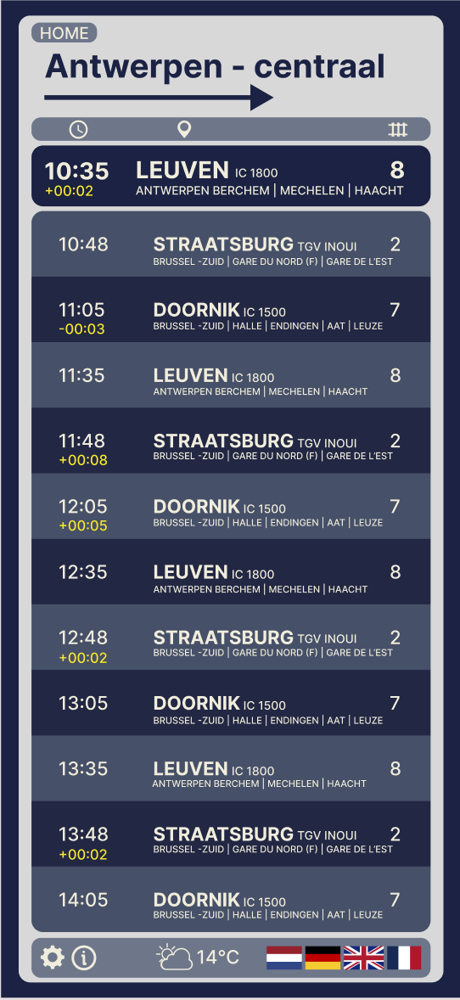
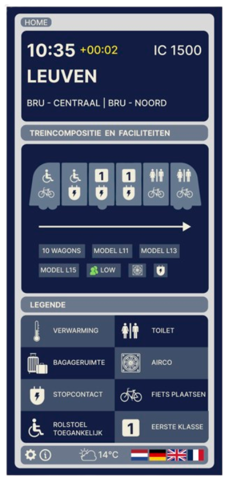

Week 8 — Van prototype naar interactieve mobiele applicatie
In de achtste week lag de focus op het verder uitwerken en finaliseren van het prototype, met een duidelijke stap richting een mobiele applicatie. Ik combineerde mijn kennis van HTML, CSS en Tailwind met mijn eerdere ontwerpen in Figma om tot een consistent, realistisch en interactief geheel te komen.
Ik vertaalde mijn bestaande treinschermen naar mobiele schermen, waarbij ik werkte met het frame van een iPhone 16 om een realistische gebruikerservaring te simuleren. Eerst zette ik de drie belangrijkste treinschermen om naar het telefoonschermformaat. Daarna breidde ik het prototype uit met extra tussenschermen, zodat het ontwerp aanvoelde als een volwaardige applicatie. Zo ontwierp ik onder andere een loginpagina, een ticketpagina, een favorietenpagina en een informatiepagina, allemaal in dezelfde visuele stijl en structuur.
Vervolgens gaf ik elke pagina een duidelijke functie en verbond ik de schermen met elkaar om een logische gebruikersflow te creëren. Door interactieve elementen toe te voegen, zoals inloggen en navigeren tussen verschillende schermen, begon het prototype steeds meer aan te voelen als een echte, functionerende app.
Tijdens deze week lag de nadruk sterk op gebruiksvriendelijkheid, overzicht en consistentie. Ik zorgde ervoor dat de navigatie intuïtief bleef en dat de informatie helder gepresenteerd werd, zowel op grote treinschermen als op kleinere mobiele schermen. Deze stap vormde een belangrijke brug tussen concept, design en interactie, en bracht het project naar een afgerond en samenhangend eindresultaat.
Perronscherm - Iphone 16

Overzichtscherm - Iphone 16
Wagonscherm - Iphone 16
